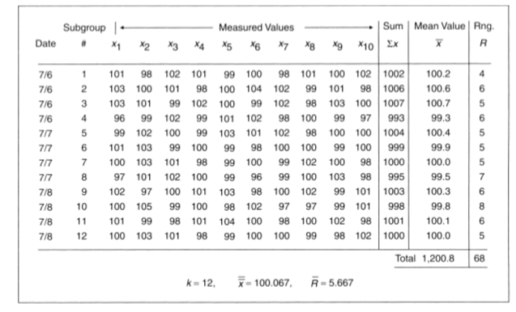
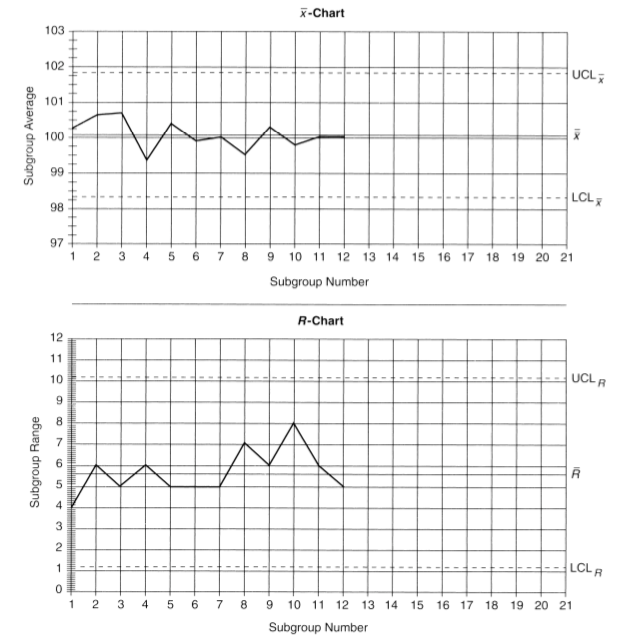
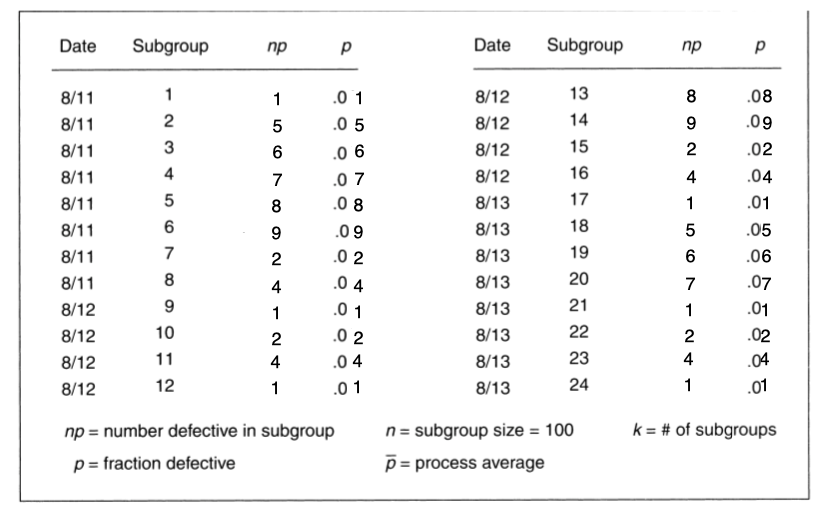
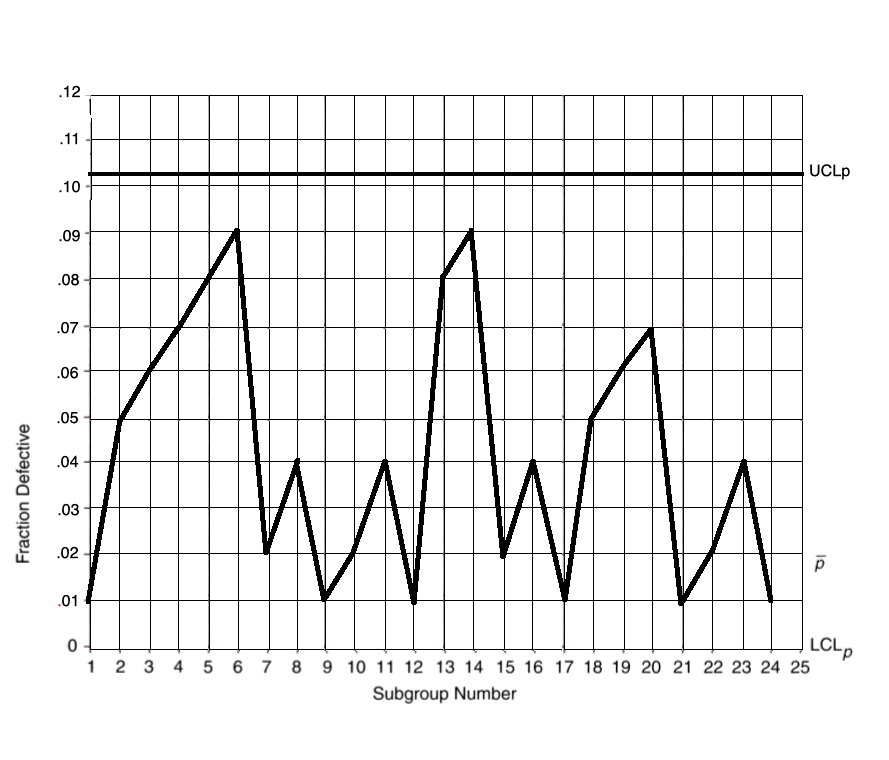

Name: Timothy Barbara
Customer involvement is key part of total quality management. A QFD or Quality Function Deployment is a key element in customer involvement. The concept originated in Japan in the 1960s. The idea is translating “the voice of the customer” into engineering characteristics for a product. These qualitative demands are turned into quantitative features and targets. A key component to QFD is “the house of quality.” It identifies the customer desires (or whats), the importance of those desires, and engineering characteristics that may be relevant to those desires (hows).
My company uses QFD in our design process. We use four phases of quality function deployment. First comes product conceptual planning. This is the origin of the product. Designers should use market research, customer interviews, and other methods to solicit customer desires for the new product. This is then translated into concept designs and marketing plans. This can include renderings and sketches of the final product.
Next comes product development and specification. This is where prototypes are developed and tested against benchmarks. Next comes the definition of the manufacturing process which is built based on product specifications obtained during the QFD process. Finally, once the product development is complete it can go into production.
The WHATs in a QFD matrix, or house of quality, are the customer desires. Our company tracks these desires through the following process. First we gather customer needs. We can do this with surveys, interviews, focus groups, etc. We need to have a good understanding of customer needs and desires in order for our product to be successful in the marketplace.
These customer needs eventually become the what portion of the QFD matrix. Once we have gathered the requirements we must refine them into useful data. We can refine these requirements using one of several tools such as an affinity diagram. In this diagram we group requirements into natural groups based on their relationships to other requirements. To do this, ideas are placed on cards. We then take the cards for ideas that seem related and place them into groups. We then use a tree diagram to to refine our affinity diagram. In this diagram we must clearly define the issue we are solving. We then propose steps that must happen for this to be achieved. We arrange these under the tree and repeat the process for each branch. The goal is to get a better overview of the design but it could go so far down as to define the inner workings and details of the design. This is best done by a cross functional team in order to get the best overview of the project.
Issues also need to be assigned a customer importance rating. Some requirements may be trivial requests but some may be core customer needs. These requirements should be weighted appropriately and assigned an importance. This exercise will highlight where efforts are best needed to fulfill the most important customer needs. Without this, resources may not be focused on the biggest most important items.
Once we have gathered the whats of a QFD matrix we can move on to the hows. This is where product managers at my company lead efforts to map customer requirements to specific measurable design targets. These are not necessarily technical designs or specifications but the characteristics of the product that we feel will best meet the needs of the customer defined as the whats in our QFD matrix.
We may again use affinity diagrams and other tools to assemble this data with the key difference being that this information has been refined from customer requirements. This is an important process in which vague statements and requirements from customers are turned into actual design requirements. During this process it may become clear that different team members have a different understanding of the requirements. This is an important part of design as these things need to be cleared up before a product can go to production.
When coming up with these how’s we must also be mindful of the customer importance ratings of the various items. We must make sure the proper care and time is given to items with high ratings while items with lower ratings are considered but not given a disproportionate amount of resources in the design. We can use these values to generate a planning matrix in which we can rank requirements by overall weighting.
Once the technical requirements or HOWs are defined, we move on to developing the interrelationship matrix. This matrix relates our customer needs to the technical requirements. To develop the interrelations we take each row of customer needs and compare it to the columns of technical requirements. Each pairing is assigned an interrelationship value ranging from 1 to 9. A value of 1 shows a weak relationship between the WHAT and the HOW. This means the customer need is related technical requirement but only weakly. The customer need does not stand solely on the success of this feature. A value of 3 shows a moderate correlation between the need and the technical requirement. These features are important to a customer need. A value of 9 shows a strong correlation between the customer need and the requirement. This requirement is essential to the success of this need.
It is important to fill out the entire matrix. Any rows which contain no interrelationship values at all indicate that there is a customer need that is going unfulfilled by the design. Any empty column could indicate that there is a technical requirement that may not be fulfilling any specific customer need. We should reexamine these requirements.
When calculating technical priorities we must first develop a Planning Matrix. We begin this process by taking each customer requirement and building a matrix of our own and our competitors products where we assign customer rankings to how well we currently meet each element. We them come up with an improvement factor which indicates how much we want to improve our current rating in each category. We then assign a “Sales Point” rating. This is a subjective “bonus score” of how marketable this feature will be. Finally we calculate our Overall Weighting for each requirement using the formula Overall Weighting = Customer Importance * Improvement Factor * Sales Point.
With our planning matrix complete we must now fill out our interrelationship matrix. Each intersection of rows and columns is given a rating of how strongly or weakly correlated each pair of items is. Once we have developed the matrix we must calculate our technical priorities. We must multiple each Interrelationship Value in our matrix by it’s corresponding Overall Weighting. We then take the sum of all of these columns. We then enter this value in the correct column of the Design Targets Matrix. This is the truest measure of how our technical requirements are ranked by importance to the customer.
Statistical process control is a method which uses statistical data to control a process. We use this process extensively in my company. By monitoring the process we can reduce waste and produce more quality products that meet specifications. We practice statistical process control in two phases. First we must establish the process and define our targets. Next we must examine a particular period and look at the variation in the data. We can separate these variations into “common” or “special.” Every process displays a normal degree of variation due to the infeasibility of controlling every environmental or equipment related aspect of manufacturing. These are called common causes. Common causes have no special source to which they can be attributed and produce a normal and predictable variation. For example, my company pushes usage data from our equipment back to our datacenter expecting a certain range of latency due to the unpredictable nature of computer networks. It is unrealistic to set a specific target for this so a range or acceptable latency is defined. Data points which exist outside of our normal variation are called “special” sources. These sources can be attributed to some failure in the process which caused the variation. For example, if a cable comes unplugged or network connectivity is otherwise lost we will see a clear correlation between this event and the special variation. When we can detect these sources we can work to overcome them and reduce their interference with the process.
A control chart is one of the seven basic tools of quality invented by Walter Shewhart of Bell Labs in the 1920s. It is used as a part of statistical process control to measure a certain variable such as production targets or number of defects against acceptable targets. In a control chart data is plotted over time with the data staying between an upper control limit (UCL) and the lower control limit (LCL). These limits constitute what the business considers to be acceptable variations in the data and are called “common causes.” The data should only vary up and down around the center of the UCL and LCL. This variation is due to common causes.In some circumstances data will cross the UCL or LCL which indicates that there was some anomaly which caused the data to pass acceptable levels. These are called “special causes.” A longer run of points outside of the LCL and UCL indicates a more serious problem that requires immediate attention. When data is outside of the boundaries set by the LCL and UCL the process is considered “out of control.”
Control charts for variables are created for data that can be measured and grouped for example tolerances in machined parts. We can create a control charts with x-charts and an R-chart which is used to monitor data at regular intervals. To create this chart we must first consider our sampling procedure. Samples must be frequent enough to not mask slow drifts but not so large that they skip significant data. We should then collect around 100 data points according to our interval. We then calculate the mean values of the data in each subgroup x and the range of data or R. We then calculate the average of the ranges which gives us the centerline for our chart. We then calculate the processes lower and upper limits. Finally we draw the chart and plot the data on the chart.
The following data was collected on Precision Spacers. It was found in the text book.
We begin by calculating the mean value for each row. This information in provided. We then calculate the UCL and LCL values UCLx =x+A2R LCLx =x-A2R
UCLx = 100.067 + 10.31 * 5.6672 = 100.067 + 1.75677 = 101.82377 LCL x = 100.067 - 1.75677 = 98.31023
Plotting the data gives us these charts.
Control charts for attributes are created using the p-Chart. These charts are used for data that can be counted rather than measured. For example, the number of defective items in a production run can be charted in this way. The process for creating a P-chart is similar to an x and r chart. First we must choose a sample size large enough to include defects. Our company produces washing machines with filters which capture micro-plastics. Our filter sheet production line has a 2% defect rate. Here will will use a sample size of 100. We want to spread our samples out among the production run so that we can see if trends develop. If we make 1000 filter sheets per hour and sample 100 sheets from each hour we can obtain 8 samples in an 8 hour day, After 3 days we have collected 24 sub groups of data.
In order to build a chart from this data we need to find our fraction of defective items by sub groups p, the average -p, and the UCL and LCL. To calculate the p values we use the formula p̂ = np/n. For example in the first sub group we found 1 defective sheet so our p̂ is
p̂=1/100
=.01
We continue this calculation for each group. We then calculate our process average by dividing the total number of defective filter sheets by the total number of sheets in all sub groups.
=100/2400
=.041%
Next we calculate our UCLp and LCLp with the formulas
UCLp= p̂ + ((3√p̂(1-p̂))/√n UCLp= p̂ - ((3√p̂(1-p̂))/√n
This gives us a UCLp of 0.100487 and an LCLp of -0.0184871 (which is equivalent to zero since we can’t have negative defects.)
Note that these are just our trial limits. As we have only now constructed our control chart we are unable to determine which data points are caused by special causes. We will refine this chart later in subsequent runs. From here we can construct our p-Chart.
There are many different methods and tools which can be used to improve quality in any organization. This is essential for any business as slips in quality can be extremely costly and can result in reputational harm or loss of customers.
In my company, one such approach to quality is the Deming cycle or Plan, Do, Check, Act (PDCA). PDCA is a cyclical quality approach which ensures a robust culture of quality within organizations. Within each cycle, a company makes plans to perform a certain change which will improve quality. They then implement this change during the do part of the cycle. The check part of the cycle, later refined to the study portion, involves checking the results of the change. Has this change been beneficial? It’s not enough to just record results, we must understand them. Once results are understood we must act on these results. We identify any new quality issues and then act on them. The cycle begins again.
In conjunction with a culture of total quality organizations can also use the 7 tools of quality. These include tally charts which are simple charts used to quickly record data in a simple format for later analysis. Control charts are another useful tool. As described above, control charts are used to chart the output of a process and determine if the process is within certain upper and lower limits. This is an essential part of Statistical Process Control. Flow charts can be used to easily identify gaps in a process by laying the whole process out visually. Pareto charts can be used to quickly determine leading causes for errors and help identify ways to reduce them. Histograms allow for the simple analysis of data in a visual format. Fishbone diagrams are useful for identifying the root causes of defects. Scatter diagrams can be used to identify trends in data.
Control charts are an important part of statistical process control. Control charts are used to compare some sort of data, either a measurement or number of defects against acceptable standards established by the company. In a control chart data is plotted over time with the data staying between an upper control limit (UCL) and the lower control limit (LCL). These limits constitute what the business considers to be acceptable variations in the data and are called “common causes.” The data should only vary up and down around the center of the UCL and LCL. This variation is due to common causes. A control chart can help a business highlight production issues and measure waste.
By observing the established UCL and LCL a business can determine if their current quality performance is acceptable in comparison to competitors. They can also identify potential areas of investment in quality or identify the root causes of defects. Continuous control charts can help ensure a production line doesn’t fall out of spec or quality slips below targets. If this happens this can be an expensive problem for firms. Companies risk reputational harm or loss of customers by introducing products with declining quality. By monitoring a process with a control chart we can make sure this doesn’t happen.
Article 1 was on Puerto Rico's goal to generate all energy from renewable sources by 2050. The island will start by eliminating coal power plants in 2020. I pointed out that energy independence is especially important for Puerto Rico after hurricane Maria. Colleen added that this would be useful to avoid disruption of supply chains.
Article 2 was on death metal created by artificial intelligence. I pointed out that the idea of copyright for AI music would likely be an interesting new legal battlefield.
Article 3 was on the use of smarter software in the aerospace industry. Software enables companies to make sense of large amounts of data and save time and money by leveraging this data. This concept can be applied to any industry as all companies can make better use of software and data to better perform in the market. It is more important than ever for businesses to stay competitive in a global and connected world.